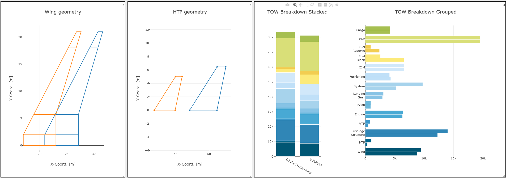
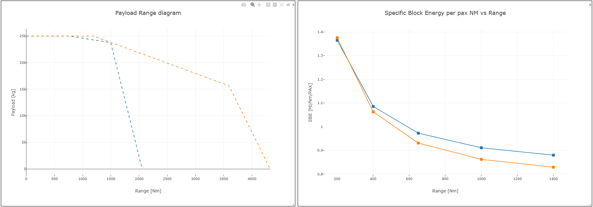

The following examples showcase how DIANA can be used to explore, analyze, and explain data. Each case demonstrates a different capability — from concept validation and trend discovery to explainable AI analysis — allowing users to understand the full potential of the framework.
This example demonstrates how DIANA enables validation and performance analysis between a hydrogen and the correspondent kerosene aircraft concepts, allowing to discover new trends and drawing some provisional conclusions.
To achieve this two dashboards were generated. In the first one we have three charts, from left to right, the wing geometry comparison, horizontal tail plane comparison and a mass breakdown of both aircraft. In orange the kerosene concept and in blue the hydrogen one.
As known, weight is a key parameter for aircraft design, always being desired to me minimized. As it can be observed in the chart, the take off mass of the hydrogen concepts is higher, coming specially from an increase in the fuselage structure and system masses. This allows us to validate the correct implementation of hydrogen , as a weight penalty due to the inclusion of the tanks was expected.
Figure 1. Dashboard comparing wing and HTP geometry, as well as mass Breakdown of the kerosene (orange) and hydrogen (blue) concepts. /p>
However, new unexpected trends can also be discovered. Due to the inclusion of the tanks, the center of gravity of the aircraft is moved backwards (as tanks are included in the rear of the fuselage). As a consequence the wing is shifted backwards too, leading to an increment in the size of the horizontal tailplane.
In the second dashboard below, the performance of both aircraft are compared. On the left we have a payload range diagram and on the right a specific block energy chart. From the chart on the right it can be seen that despite the increased weight, the specific energy consumption of the hydrogen concept is very close to that of the kerosene aircraft, inferring that the use of a mild hybrid propulsion system, allows for an efficient use of fuel with sustained energy consumption.
Figure 2. Dashboard comparing Payload Range diagrams and specific block energy of the kerosene (orange) and hydrogen (blue) concept. /p>
In the same dashboard, it is clearly shown that this comes with reduced payload-range capabilities. The hydrogen concept has a maximum range roughly half of the kerosene one. However, the main areas of interest for the short haul market, with high payload and ranges between one thousand to two thousand nautical miles can still be covered.
As a conclusion of this study, and with numerous assumptions behind, provided that the hydrogen concept can cover a good enough portion of the short-range air transport market, and the costs of LH2 will be sufficiently low (in comparison to SAF), the hydrogen solution offer potential for a high climate impact reduction while being competitive.